Modeling with patterns
Welcome to the tutorial on modeling with patterns in torch_structure. If you have not installed torch_structure yet or had problems with the installation process, please refer to the installation guide.
TorchStructure's patterns all work in similar ways. First, we will start with a rotational pattern.
A rotational pattern
We start by creating an empty StructData graph whose nodes carry 3D coordinates.
import torch
from torch_structure.data.data import StructData
import matplotlib.pyplot as plt
node_attrs = {"coords": torch.empty((0, 3), dtype=torch.float)}
data = StructData(node_attrs=node_attrs)
Next, we create a 6-fold rotational pattern and register it on the graph under the name "rotation". By default, it rotates about the z-axis through the origin. Adding a single node (the seed) with add_nodes_by_pattern then also adds its five rotated copies.
rotation = data.create_rotational_pattern(6)
data.add_patterns({"rotation": rotation})
data.add_nodes_by_pattern(pattern="rotation", coords=torch.tensor([[1.0, 0.0, 0.0]]))
Visualize the result. With pattern=True, plot draws the nodes together with the pattern.
data.plot(pattern=True)
plt.show()
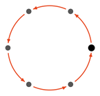
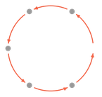
Edges work the same way. Adding an edge from the first node to the second with add_edges_by_pattern also adds its five rotated copies, which connect the six nodes into a hexagon.
data.add_edges_by_pattern(edge_indices=torch.tensor([[0], [1]]))
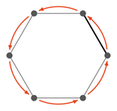
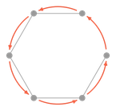
The six nodes stay linked through the pattern: if we move one of them, the other five adjust, and the edges follow. Here, we move the first node outwards from (1, 0, 0) to (2, 0, 0) with set_node_attr_by_pattern, where mask selects the node to move. Edge attributes can be set in a similar manner with set_edge_attr_by_pattern, which gives all rotated copies of the selected edge the same value.
mask = torch.tensor([True, False, False, False, False, False])
data.set_node_attr_by_pattern("coords", mask=mask, value=torch.tensor([[2.0, 0.0, 0.0]]))
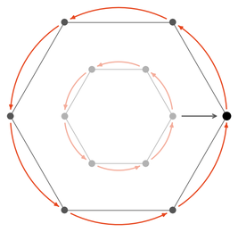
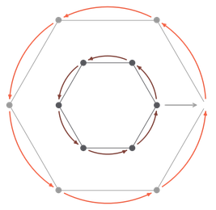
To move a single node without its copies, use set_node_attr instead of set_node_attr_by_pattern. Here, we move the first node slightly inwards, while the other five nodes stay where they are.
data.set_node_attr("coords", mask=mask, value=torch.tensor([[1.6, 0.0, 0.0]]))
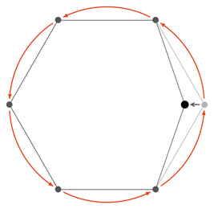
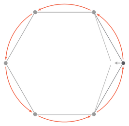
A translational pattern
We again start with an empty StructData graph whose nodes carry 3D coordinates.
import torch
from torch_structure.data.data import StructData
import matplotlib.pyplot as plt
node_attrs = {"coords": torch.empty((0, 3), dtype=torch.float)}
data = StructData(node_attrs=node_attrs)
Next, we create a translational pattern with 4 positions and register it on the graph under the name "translation". By default, each position is shifted by (1, 0, 0) from the previous one. Adding a single node (the seed) with add_nodes_by_pattern then also adds its three shifted copies, which gives an array of 4 nodes. We again add an edge from the first node to the second.
translation = data.create_translational_pattern(4)
data.add_patterns({"translation": translation})
data.add_nodes_by_pattern(pattern="translation", coords=torch.tensor([[0.0, 0.0, 0.0]]))
data.add_edges_by_pattern(edge_indices=torch.tensor([[0], [1]]))
Visualize the result. With pattern=True, plot draws the nodes and edges together with the pattern, each translation step as an arrow.
data.plot(pattern=True)
plt.show()
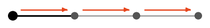
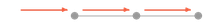
The nodes stay linked through the pattern. Changing one node changes the others accordingly.
mask = torch.tensor([True, False, False, False])
data.set_node_attr_by_pattern("coords", mask=mask, value=torch.tensor([[0.0, 1.0, 0.0]]))
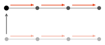
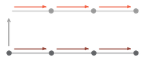
Nesting patterns
Patterns can be nested with nest_patterns: each pattern copies everything the patterns before it created. Nesting a translation with a rotation can give very different structures, depending on the direction of the translation.
A polar net
We start with a 4-fold translation along the x-axis nested into a 6-fold rotation to get a polar net of 4 × 6 = 24 nodes. As copies of one seed, they form one expansion (id 0), where each node has a position on every pattern level, innermost pattern first: e.g. [1, 0] is one translation step out, [0, 1] one rotation step around, and [3, 2] 3 translation steps out and 2 rotation steps around. add_edges_by_pattern_level connects such positions. An edge from [0, 0] to [1, 0] runs outwards along the first array.
import torch
from torch_structure.data.data import StructData
import matplotlib.pyplot as plt
node_attrs = {"coords": torch.empty((0, 3), dtype=torch.float)}
data = StructData(node_attrs=node_attrs)
translation = data.create_translational_pattern(4, direction=torch.tensor([1.0, 0.0, 0.0]))
rotation = data.create_rotational_pattern(6)
data.add_patterns({"polar_net": data.nest_patterns([translation, rotation])})
data.add_nodes_by_pattern(pattern="polar_net", coords=torch.tensor([[1.0, 0.0, 0.0]]))
data.add_edges_by_pattern_level(
src_expansion_ids=[0], dest_expansion_ids=[0],
src_level_positions=[[0, 0]], dest_level_positions=[[1, 0]],
)
Visualize the result.
data.plot(pattern=True)
plt.show()
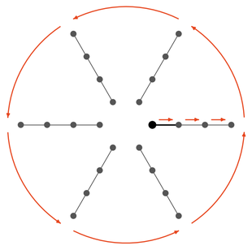
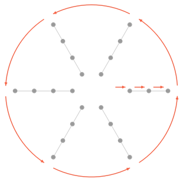
We could equally give the edge by the indices of its two nodes, with add_edges_by_pattern as in the sections above, or by their positions in the expansion, with add_edges_per_expansion_by_pattern. Here, both count the nodes translation by translation, from the inside out, so the level positions [t, r] are node and expansion position t + 4 * r. In place of the call above, either of these would add the same edges:
data.add_edges_by_pattern(edge_indices=torch.tensor([[0], [1]]))
data.add_edges_per_expansion_by_pattern(
src_expansion_ids=[0], dest_expansion_ids=[0],
src_expansion_positions=[0], dest_expansion_positions=[1],
)
Next, we add an edge in the rotational direction, from level positions [0, 0] to [0, 1]. Its copies connect nodes in the rotational direction.
data.add_edges_by_pattern_level(
src_expansion_ids=[0], dest_expansion_ids=[0],
src_level_positions=[[0, 0]], dest_level_positions=[[0, 1]],
)
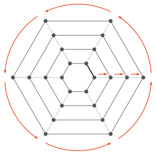
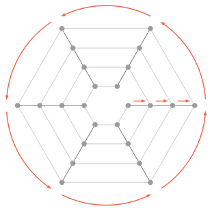
Finally, we add an edge in the diagonal direction, from [0, 0] to [1, 1].
data.add_edges_by_pattern_level(
src_expansion_ids=[0], dest_expansion_ids=[0],
src_level_positions=[[0, 0]], dest_level_positions=[[1, 1]],
)
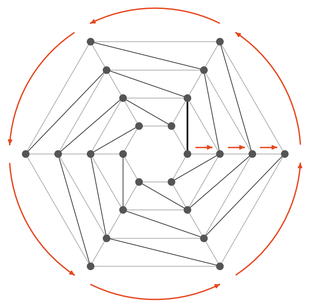
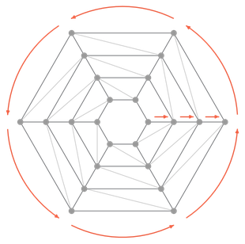
Nested patterns stay linked as well. Here, we move the outermost ring outwards, from a radius of 4 to 5, with set_node_attr_by_pattern_level, which selects a node by its level positions just like add_edges_by_pattern_level: [3, 0] is the last node of the first array. replicate_levels takes one entry per level of the pattern, innermost first: [False, True] freezes the inner pattern (the translation), so the move is copied around the ring but not along the translations. replicate_levels=[True, True] would move every ring outwards, and replicate_levels=[True, False] would only move one array.
data.set_node_attr_by_pattern_level(
"coords", expansion_ids=[0], level_positions=[[3, 0]],
value=torch.tensor([[5.0, 0.0, 0.0]]), replicate_levels=[False, True],
)
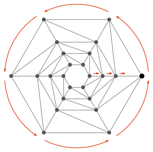
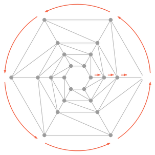
A cylinder
If the translation instead runs along the rotation axis, it stacks the seed into a column of 4 nodes, and the same rotation copies this column into a cylinder of 4 × 6 = 24 nodes. This time, we start with an edge in the rotational direction, from [0, 0] to [0, 1]. Its copies connect the nodes at each height into a closed ring, which gives 4 × 6 = 24 edges.
import torch
from torch_structure.data.data import StructData
import matplotlib.pyplot as plt
node_attrs = {"coords": torch.empty((0, 3), dtype=torch.float)}
data = StructData(node_attrs=node_attrs)
translation = data.create_translational_pattern(4, direction=torch.tensor([0.0, 0.0, 1.0]))
rotation = data.create_rotational_pattern(6)
data.add_patterns({"cylinder": data.nest_patterns([translation, rotation])})
data.add_nodes_by_pattern(pattern="cylinder", coords=torch.tensor([[1.0, 0.0, 0.0]]))
data.add_edges_by_pattern_level(
src_expansion_ids=[0], dest_expansion_ids=[0],
src_level_positions=[[0, 0]], dest_level_positions=[[0, 1]],
)
Visualize the result.
data.plot(pattern=True)
plt.show()
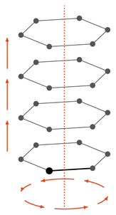
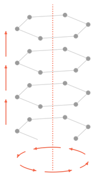
Again, we could equally give this edge by node index or by expansion position. Both now count the nodes column by column, from the bottom up, so [0, 1] is node and expansion position 4. In place of the call above, either of these would add the same 24 edges:
data.add_edges_by_pattern(edge_indices=torch.tensor([[0], [4]]))
data.add_edges_per_expansion_by_pattern(
src_expansion_ids=[0], dest_expansion_ids=[0],
src_expansion_positions=[0], dest_expansion_positions=[4],
)
Next, we add an edge in the translational direction, from [0, 0] to [1, 0], one step up the first column. Its copies connect the nodes of every column.
data.add_edges_by_pattern_level(
src_expansion_ids=[0], dest_expansion_ids=[0],
src_level_positions=[[0, 0]], dest_level_positions=[[1, 0]],
)
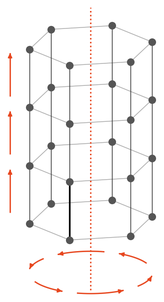
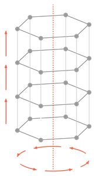
Finally, we add an edge in the diagonal direction, from [0, 0] to [1, 1].
data.add_edges_by_pattern_level(
src_expansion_ids=[0], dest_expansion_ids=[0],
src_level_positions=[[0, 0]], dest_level_positions=[[1, 1]],
)
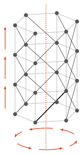
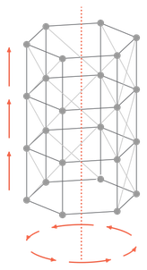
set_node_attr_by_pattern_level with replicate_levels=[False, True] again replicates the changed value of a node around the ring, but not up the columns.
data.set_node_attr_by_pattern_level(
"coords", expansion_ids=[0], level_positions=[[1, 0]],
value=torch.tensor([[1.2, 0.0, 1.0]]), replicate_levels=[False, True],
)
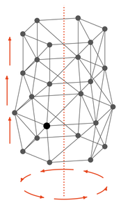
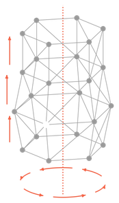